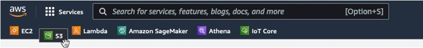
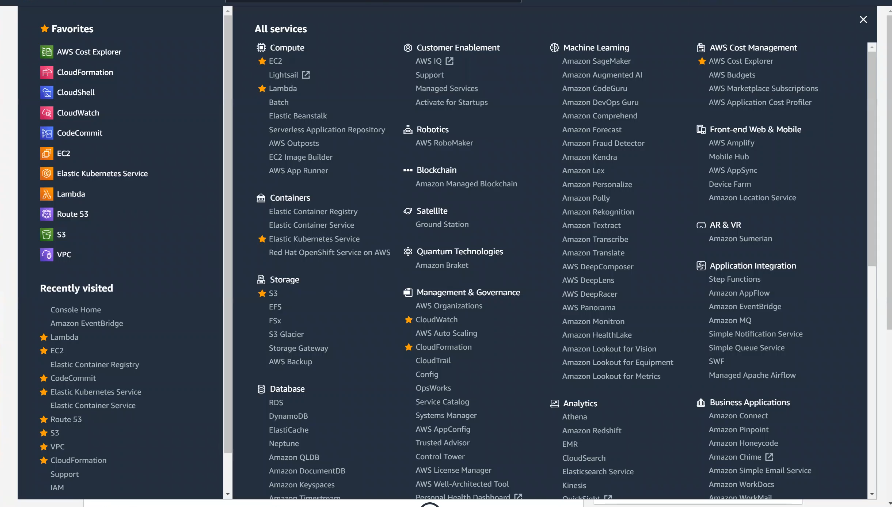

Unified Navigation
What is Unified Navigation?
Unified Navigation is a next generation navigation bar in the AWS Management Console. This version of the navigation bar includes a new customizable favorites bar, updates to the services menu, and visual updates to improve consistency and accessibility. The updated services menu groups services by category and provides an A to Z listing of all services. The new favorites bar appears when you have selected at least one service as a favorite in the services menu. It also supports an unlimited number of favorites that can be organized with drag and drop.

Unified Navigation was launched in the AWS Console on 11/23/2021 and makes it easier for AWS customers to browse and search for AWS services with an optimized service menu that is more consistent and accessible. AWS customers can also easily customize their favorite services with drag and drop for 1-click access in the new favorites bar

Theme(s): Expanding Navigation with Personalization 1) Contextual-based Navigation display (Recently visited, favorites) 2) targeting for ingestion - single or multiple indexes) 4) Services re-order list (ML model to predict results) 5) Deliver new features to Unified Navigation (e.g., tabs, customization) 6) Keyboard shortcuts for Navigation 7) Integration with Unified Settings – Ability to turn on/off certain components 8) Discovery Que – highlight services (based on usage)